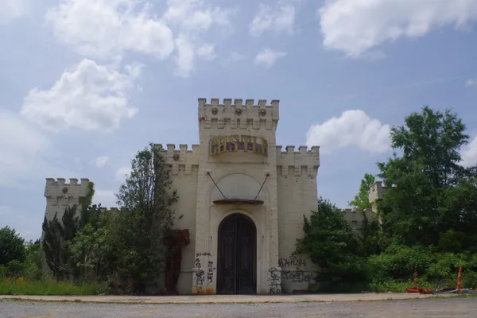
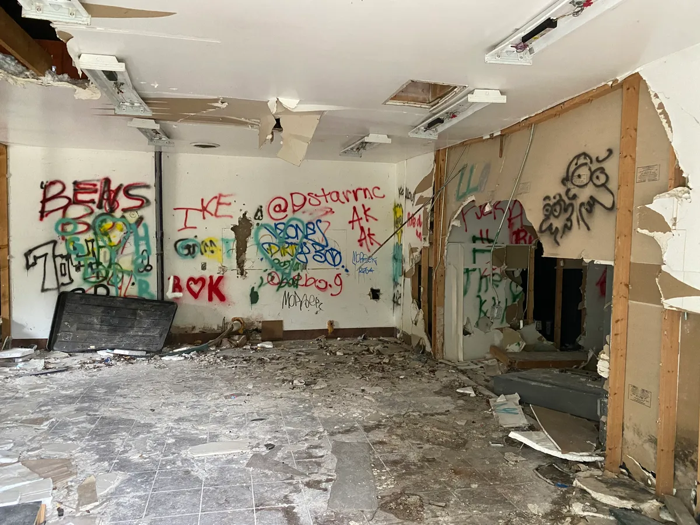

// Explore the Forgotten
Urban exploration, frequently abbreviated as urbex, is the thrilling practice of investigating and photographing abandoned, hidden, or forgotten man-made structures. Driven by curiosity and a passion for history, enthusiasts venture off the beaten path to uncover hidden spaces that have been left behind by modern society. It is a subculture centered around rediscovering local history, documenting structural decay, and capturing the beautiful process of nature reclaiming places forgotten in time.

Abandoned Castle Video Arcade in Charlotte, NC.
The locations sought out by urban explorers are incredibly diverse, spanning across old industrial factories, decommissioned hospitals, historic schools, vacant residential estates, and neglected military installations. These spaces, having outlived their original utility, sit frozen in time and offer a tangible window into the past for anyone who dares to venture inside.

Destroyed interior of arcade.
Why Explore Abandoned Places?
Abandoned places can be interesting because of the things that are left behind. Old furniture, signs, machines, artwork, and other objects can give an idea of what the location was like when it was still in use. The combination of old structures and natural decay can also create unique scenes for photography and exploration.